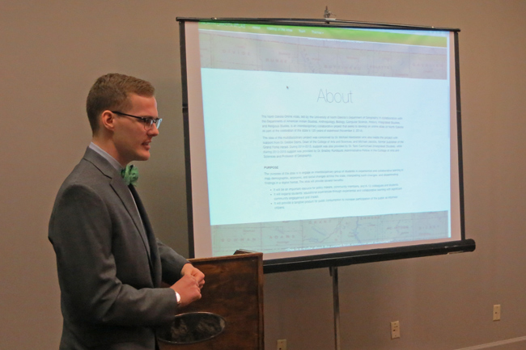

Welcome to the photo gallery. Click on a picture for the description.

In April 2016, Mike Jacobs and seven students explored North Dakota on a field trip going to places like several ghost towns, Bismarck prison, missile silo sites, Marmarth, and the Roosevelt North Unit and others. Here the group is in the ghost town of Leith. The students are: Alex Aman, Karl Bauer, Will Beaton, Mike Fecadu, Paul Jensen, Shawn Larson, and Adam Ratchenski.

Jacob Crane, UND History, A Brief Narrative on the History of Nuclear Weapons in North Dakota, as Mapped by the North Dakota Atlas Project.

Karl Bauer, UND Geography, Abandoned Landscapes: Mapping North Dakota's Frontier Communities.

Adam Ratchenski, UND History, North Dakota Atlas Project: A History of the Conservation Reserve Program in North Dakota.

Paul Jensen, UND History, Politics of the Prairie: A Survey of Early North Dakota Gubernatorial Elections (1889-1930).

Students from GEOG 471/L Cartography & Visualization, A&S 499 Interdisciplinary Practicum, and CS492 Senior Capstone I during Fall 2014 semester.